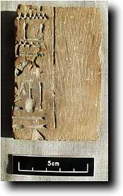
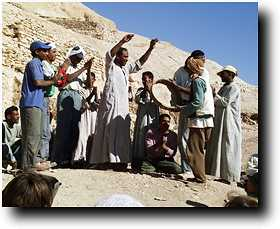
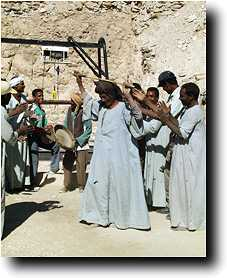
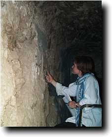

Thursday 17 December
At last! An object which confirms the attribution of the large Shaft I to Senneferi. A piece of wood was found from the corridor off that shaft which bears the title (overseer of sealbearers) and name of Senneferi (the name is written as Sennefer), and thus shows us that this was indeed his burial place. We have of course suspected this all along, but this sort of confirmation gives everyone a real boost.
Progress along this corridor was rapid, and we are almost now at the point where the passage turns to the south.
|
Digging in shaft H found the bottom of the doorway, but there is no indication that the floor of the shaft itself has been reached, which makes it all the more possible that this could be the second shaft mentioned by Mond as being in this courtyard. As the room will be impossible to dig if the shaft goes much deeper, we are now concentrating our efforts there. Far more bone and linen from rifled mummies seems to be coming up from this shaft than the others in the courtyard.
Today being the last certain working day before the start of Ramadan, we had a small celebration for the men. It is great to see how much the workmen enjoy this sort of thing.

|
Tuesday 15 December
This morning the team was augmented by the arrival of Helen Strudwick and Rita Lucarelli. Today was also the last day of filming by the television crew, so my time in particular was broken up by filming all the various little bits which have to be done to complete the film. A small hafla was organised to celebrate the end of the filming. 
|
Breaks to allow filming, the hafla and some electricity problems meant that progress in Shaft I was not as good as hoped. An intercom was installed to improve communication between those above and below ground. Shaft H went down a further half metre, although progress was slowed by the need to break up some stones.
Pottery and conservation work continued apace. Below is a photo of Julie Dawson at work on the condition survey of the passage of the tomb (wall 9). 
|

 The Dig Diary 1998--Part 5
The Dig Diary 1998--Part 5